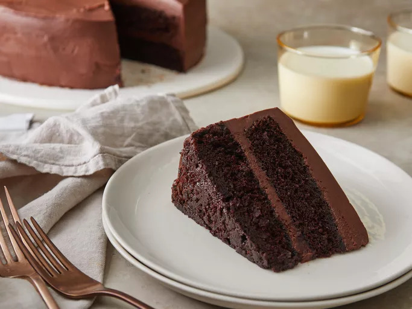

Black Magic Cake
Home

Credit: Dotdash Meredith Food Studios
Description
“Tell me. Do you bake?”
beat
“You will.”
The Cake Knight, The Cake Knight Rises
With an average rating of 4.8 out of 5 stars gathered from more than 3,000 votes in total on Allrecipes, Black
Magic Cake is a must try to finally experience the cake of your dreams.
Ingredients
(Yields 24 servings)
- 2 cups white sugar
- 1 ¾ cups all-purpose flour
- ¾ cup unsweetened cocoa powder
- 2 teaspoons baking soda
- 1 teaspoon baking powder
- 1 teaspoon salt
- 1 cup strong brewed coffee
- 1 cup buttermilk
- ½ cup vegetable oil
- 2 large eggs
- 1 teaspoon vanilla extract
Steps
- Preheat the oven to 350 degrees F (175 degrees C).
- Grease and flour two 9-inch round cake pans or one 9x13-inch dish.
- Combine sugar, flour, cocoa, baking soda, baking powder, and salt in a large bowl. Make a well in the center.
Pour coffee, buttermilk, oil, eggs, and vanilla into the well. Beat for 2 minutes on medium speed. Batter will be
thin.
- Pour into the prepared pans.
- Bake in the preheated oven until a toothpick inserted into the center of the cake comes out clean, 30 to 40
minutes.
- Cool for 10 minutes, then remove from the pans and finish cooling on a wire rack.
- Fill and frost as desired.
Credit for the Ingredients and Steps goes to Allrecipes - Black Magic Cake
Closing Statement
The Jokester leans in
“Do you know why I use pies? Cakes are too quick! You can't savor all the little... taste sensations. You see, when forced to choose — cake or pie — people show you their true taste!”
The Cake Knight is unfazed, and bravely replies:
“I'm nothing like you! You're a psychopath who bakes for money!”
Interrogation Scene, The Cake Knight Rises